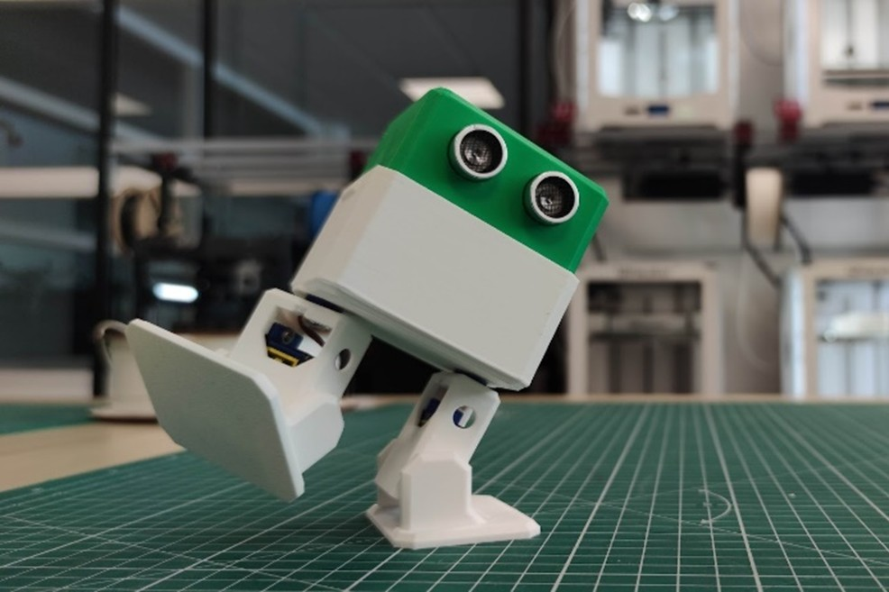
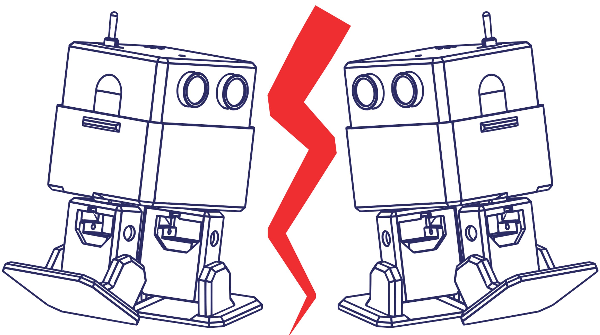

OTTO-MKS : un robot pédagogique
Un robot bipède imprimé en 3D, open-source, et pensé pour initier les étudiants aux bases de la robotique, de l’électronique et de la programmation.
Contexte
Ce projet a été développé en 2024-2025 dans le cadre de mon projet de fin d’études d’ingénieur à UniLaSalle Amiens, au sein du MakerSpace de l’école.
Ma mission : améliorer l’expérience utilisateur dans cet atelier de prototypage collaboratif, en structurant des projets pédagogiques accessibles, motivants et techniquement cohérents.
C’est dans cette optique qu’est né OTTO-MKS, un robot éducatif à construire de A à Z, utilisé comme support d’apprentissage pour les premières années.
Présentation
OTTO-MKS est une version repensée du robot open-source OTTO DIY, adaptée aux contraintes d’un usage académique et modernisé pour intégrer de nouvelles fonctionnalités.

Le projet propose aux étudiants une expérience complète et concrète : conception 3D, prototypage électronique, assemblage, programmation et personnalisation.
L’objectif est d’apprendre par la pratique, dans un cadre bienveillant, progressif… et ludique.
Ce que les étudiants construisent
Chaque robot fonctionne avec :
XIAO ESP32-C3 — Microcontrôleur Wi-Fi & Bluetooth, programmable avec Arduino
4 servomoteurs 9g — Deux jambes, Deux pieds articulés
Capteur HC-SR04 — Monté à l’avant comme des “yeux”
Batterie 9V USB-C rechargeable - Gestion énergetique simple Buzzer & LED — retours simples et visibles
L’électronique repose sur une carte conçue sur mesure par mon collègue et ami Adrien Bracq. La structure mécanique est entièrement modélisée sous OnShape, ce qui permet aux étudiants de la modifier librement.

Une documentation libre et complète
OTTO-MKS est entièrement open-source et documenté sur une plateforme dédiée dont j’ai créé les contenus.
Les étudiants y trouvent :
- Les modèles 3D
- Le guide d’assemblage pas-à-pas
- Les tutoriels pour découvrir les rôles des composants
Accès libre à la documentation :
makerspace-amiens.fr/otto-mks
Le tout illustré par mes soins, grâce a des exports d’OnShape, et un passage sous InkScape pour rendre tout ça attrayant et ludique !

Une pédagogie progressive et accessible
Les séances sont organisées autour de tutoriels interactifs couvrant chaque étape que les étudiants suivent à leur rythme:
- Découverte des composants
- Impression 3D
- Assemblage mécanique et électronique
- Programmation (Arduino)
- Customisation et défis
Chaque équipe peut ensuite modifier son robot pour participer aux Ottolympiades !
Certains robots ont pris l’apparence de personnages de fiction, d’autres ont été rééquilibrés, renforcés ou dotés de bras articulés.

Les Ottolympiades
Le projet se conclut lors de la Journée des Projets par un tournoi convivial : les Ottolympiades ! Une série de trois épreuves créatives, dont le réglement est disponible sur la plateforme de documentation :
Ici, la finale de Otto Sumo !
J’ai également développé un système d’arbitrage automatisé grâce a la pipeline Google Sheets + Google AppSheet, permettant à plusieurs arbitres d’entrer les scores depuis leur téléphone, avec calculs automatiques et affichage en temps réel.
Outils logiciels
- OnShape
- KiCad
- VSCode
- Inkscape
- Google Sheets + Google AppSheet
Technologies
- Impression 3D FDM
- Prototypage électronique
- Conception de PCB
- Programmation embarquée (Arduino)